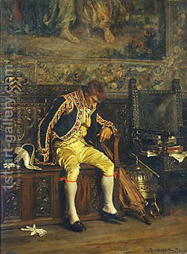

Yoma 18 - Wife for a day
In the seven days before Yom Kippur the Sages would read the Torah portion of Yom Kippur in front of the High Priest. Then they would say, "Master High Priest, please read it back to us, for perhaps you forgot or never learned." How could be it that he never learned? - In the times of the Second Temple the position was bought for money. On the last day they would show him all the animals to be used for sacrifices, except for the goat brought as a sin offering for all Jews - lest he becomes despondent thinking of it.
On the last day they also did not give him much food, for food leads to sleep, and too much of it might cause him to becomes ritually impure through seminal emission. They also did not feed such foods as etrog, eggs, fat mean and wine - for the same reason.
In general, a guest on should take precautions not to soil the linen that he sleeps on, or the host's garments, if we wears them - lest they see it and think lower of him. The Sages were very careful to maintain this sort of purity, and for this they would announce, "Who will be a wife for a day for me?" when they were visiting a remote location.
This, however, leads to a number of questions. How could they marry wives in many places - what if their children, not knowing each other, will intermarry? - Those Sages were famous, and their progeny would know where they came from. Another problem: a prospective wife needs to go to a mikveh, how can they choose anybody on the spot? - The answer is that they would send a messenger to announce their intent, a week in advance. Alternatively, we can say that they only went into seclusion with the woman of their choice, but did not have relations, thus obviating all of the above questions. But if that is so, how did it help? - One who potentially has a wife ("a bread in his basket") cannot be compared to one who does not.
Art: A Footman Sleeping by Charles Bargue